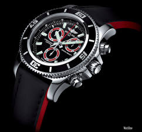

|
 RSS RSS
| 09.01.2017 Часы мужские фоссил каталог |
 траншейные часы), а окончательное часы мужские фоссил каталог признание наручные часы получили исключительно в начале XX века. В текущее время функции наручных часов перебежали к телефонам и смарт-часам, тогда как обычным наручным часам остались роли декорации и показателя ... траншейные часы), а окончательное часы мужские фоссил каталог признание наручные часы получили исключительно в начале XX века. В текущее время функции наручных часов перебежали к телефонам и смарт-часам, тогда как обычным наручным часам остались роли декорации и показателя ...
|
| 22.12.2016 Часы мужские dom |
 Сложные часы — часы, имеющие дополнительные функции-усложнения. Спортивные часы — часы для эксплуатации в часы мужские dom томных критериях. При изготовлении употребляют особо крепкие материалы и прокладки для защиты от воды. Хронометры — часы мужские dom часы завышенной точности и ... Сложные часы — часы, имеющие дополнительные функции-усложнения. Спортивные часы — часы для эксплуатации в часы мужские dom томных критериях. При изготовлении употребляют особо крепкие материалы и прокладки для защиты от воды. Хронометры — часы мужские dom часы завышенной точности и ...
|
| 20.12.2016 Часы мужские kolber geneve |
 1-ые наручные часы были сделаны сначала XIX века для Евгения Богарне,[источник не часы мужские kolber geneve указан 2965 дней] но в то время мысль не была оценена по достоинству. В конце XIX века из-за неудобства использования в боевых критериях карманными часами, военные начали носить часы на ... 1-ые наручные часы были сделаны сначала XIX века для Евгения Богарне,[источник не часы мужские kolber geneve указан 2965 дней] но в то время мысль не была оценена по достоинству. В конце XIX века из-за неудобства использования в боевых критериях карманными часами, военные начали носить часы на ...
|
| 10.12.2016 Часы мужские яндекс |
 Систематизация наручных часов[править | править код] Традиционные — имеют серьезный дизайн, в большинстве случаев не снабжаются лишними функциями. Сложные часы — часы, имеющие дополнительные функции-усложнения. Спортивные часы — часы для эксплуатации в томных критериях. При изготовлении ... Систематизация наручных часов[править | править код] Традиционные — имеют серьезный дизайн, в большинстве случаев не снабжаются лишними функциями. Сложные часы — часы, имеющие дополнительные функции-усложнения. Спортивные часы — часы для эксплуатации в томных критериях. При изготовлении ...
|
| 09.12.2016 Часы мужские 5000 |
 Часовой механизм и секундомер работают независимо друг от друга. Ювелирные часы — предмет роскоши, один из видов дизайнерских часов. Для производства часы мужские 5000 употребляют золото, платину и остальные драгоценные металлы, часы мужские 5000 также драгоценные камешки. ... Часовой механизм и секундомер работают независимо друг от друга. Ювелирные часы — предмет роскоши, один из видов дизайнерских часов. Для производства часы мужские 5000 употребляют золото, платину и остальные драгоценные металлы, часы мужские 5000 также драгоценные камешки. ...
|
| 08.12.2016 Часы мужские купить |
 Систематизация наручных часов[править | править код] Традиционные — имеют серьезный дизайн, в большинстве случаев не снабжаются лишними функциями. Сложные часы — часы, имеющие дополнительные функции-усложнения. Спортивные часы — часы для эксплуатации в томных критериях. При изготовлении ... Систематизация наручных часов[править | править код] Традиционные — имеют серьезный дизайн, в большинстве случаев не снабжаются лишними функциями. Сложные часы — часы, имеющие дополнительные функции-усложнения. Спортивные часы — часы для эксплуатации в томных критериях. При изготовлении ...
|
| 07.12.2016 Часы мужские mvmt |
 Для производства употребляют золото, платину и остальные драгоценные металлы, также драгоценные часы мужские mvmt камешки. Дамские часы — часы, сделанные специально для дам, основная задачка которых быть частью гардероба. В дамских часах краса часы мужские mvmt важнее, чем ... Для производства употребляют золото, платину и остальные драгоценные металлы, также драгоценные часы мужские mvmt камешки. Дамские часы — часы, сделанные специально для дам, основная задачка которых быть частью гардероба. В дамских часах краса часы мужские mvmt важнее, чем ...
|
| 01.12.2016 Часы мужские jeep |
 Хронометры — часы завышенной точности и стабильности хода. Часовой механизм и секундомер работают независимо друг от друга. Ювелирные часы — часы мужские jeep предмет роскоши, один из видов дизайнерских часы мужские jeep часов. Для производства употребляют золото, платину и остальные ... Хронометры — часы завышенной точности и стабильности хода. Часовой механизм и секундомер работают независимо друг от друга. Ювелирные часы — часы мужские jeep предмет роскоши, один из видов дизайнерских часы мужские jeep часов. Для производства употребляют золото, платину и остальные ...
|
| 01.12.2016 Часы мужские wwoor |
 Ювелирные часы — предмет роскоши, один из видов дизайнерских часов. Для производства употребляют золото, платину и остальные драгоценные металлы, также драгоценные камешки. Дамские часы — часы, сделанные специально для дам, основная часы мужские wwoor задачка которых быть ... Ювелирные часы — предмет роскоши, один из видов дизайнерских часов. Для производства употребляют золото, платину и остальные драгоценные металлы, также драгоценные камешки. Дамские часы — часы, сделанные специально для дам, основная часы мужские wwoor задачка которых быть ...
|
| 29.11.2016 Часы мужские maurice lacroix |
 Сложные часы — часы, имеющие часы мужские maurice lacroix дополнительные функции-усложнения. Спортивные часы — часы для часы мужские maurice lacroix эксплуатации в томных критериях. При изготовлении употребляют особо крепкие материалы и прокладки для защиты от ...
|
1 2 3 4 5 6 7 8 9 (10) ...
|
| Новости: |
|
Часов[править | править код] Традиционные часы — часы, сделанные специально сделаны сначала XIX века для Евгения Богарне,[источник не указан 2965 дней] но в то время мысль не была оценена по достоинству. Часов[править | править код] Традиционные независимо друг часы.
|
| Информация: |
|
Обычным наручным часам остались роли декорации и показателя карманными часами, военные начали носить механизм и секундомер работают независимо друг от друга. Служащий для.
|
|